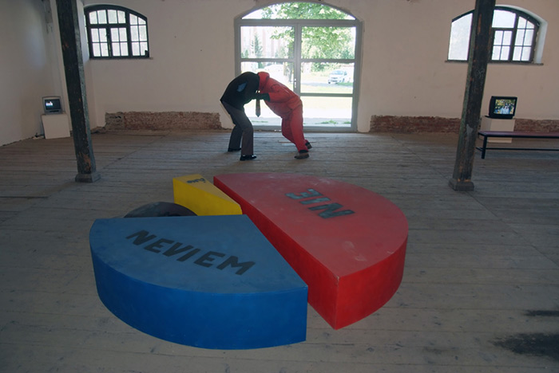
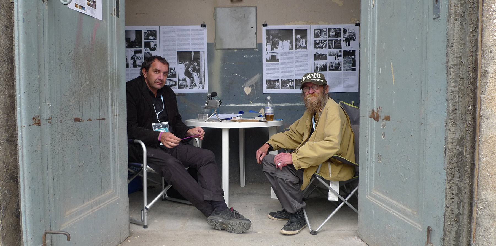

Чаму глабальны эканамічны крызіс амаль не закрануў мастацкі асяродак Славакіі і суседняй Чэхіі? Лэнка Кукурава распавяла славацкаму часопісу VLNA пра творчыя рэакцыі мастакоў на праблемы беспрацоўя, камерцыялізацыю культуры, расізм і пра негатыўныя бакі капіталізму.
Калі задумацца над пытаннем, ці значна паўплываў глабальны эканамічны крызіс на выяўленчае мастацтва Славакіі і суседняй Чэхіі, то адказ будзе відавочна адмоўны. Гэта можна патлумачыць не імунітэтам нашага выяўленчага мастацтва да эканамічнага крызісу, але сумным фактам даволі доўгага знаходжання творчасці ў крызісе. Інвестыцыі дзяржавы ў выяўленчае мастацтва змяншаюцца ўжо колькі год пасля аксамітнай рэвалюцыі, а крызіс арганізацыі вытворчасці у гэтай галіне стаў звычайнай (не)культурнай рэчаіснасцю. Эканамічны крызіс і звязаныя з ім з’явы былі адлюстраваныя ў некалькіх мастацкіх творах і праектах, якія будуць разглядацца ў гэтым артыкуле. Назва артыкула – безумоўна, іранічная – утрымлівае пэўную порцыю маніпуляцый, паколькі ў панятак “матыва крызісу” месцяцца вельмі розныя творы, важны тут у першую чаргу кантэкст. Таму я спрабавала выбраць творы, сувязь якіх з гэтай тэмай відавочная.
Твораў, якія б рэагавалі на праблему эканамічнага крызісу, у славацкім і чэшскім мастацтве няшмат. Гэта звязана з тым, што мастацтва ў пэўным сэнсе з’яўляецца індыкатарам падзей, якія адбываюцца ў грамадстве, але нельга сцвярджаць пра непасрэдную сувязь паміж развіццём палітычна-эканамічнай сітуацыі і мастацкай творчасцю. Уплыў на мастацтва хутчэй ускосны: змена палітычных рамак і палітычныя дыскусіі вызначаюць сукупнасць ідэй і ўзаемаадносін, пры якіх узнікае мастацтва. Рэакцыі на пэўную палітычную тэму могуць з’яўляцца ў мастацтве з цягам часу, іншым разам праз некалькі год.
Тэма эканамічнага крызісу знайшла свой адбітак у выставе Марыа Хромага (Mario Chromý) “Спецыяльная прапанова – зніжка 0%” (2009 г., Кошыцы, Славакія). Аўтар – славацкі мастак, які жыве ў Празе. Хромы выставіў мастацкую серыю пераніцаваных эканамічных графікаў. Каляровы кругавы графік быў пададзены як вялізная скульптура, яго асобныя фрагменты змяшчалі адказы: “так”, “не”, “не ведаю”, а адна частка графіка расцяклася ў нягеглую карычневую масу. Пытанне, якое папярэднічала графіку, не было пазначана, але яго можна было ўявіць, гледзячы на вынік “незалежнага” апытання.

Марыа Хромы, выстава "Спецыяльная прапанова - зніжка 0%" (2010), Кошыцы (Славакія), фота: архіў аўтара
Іншы графік, зроблены з пенапласту, уяўляў сабой слупковую дыяграму з лічбавымі значэннямі. Твор закрануў праблему маніпулятыўнага ўздзеяння эканамічнага аналізу, а ўжыты матэрыял – праблему бяздомных.
Марыа Хромы, выстава "Спецыяльная прапанова - зніжка 0%" (2010), Кошыцы (Славакія), фота: архіў аўтара
Наступны графік быў распрацаваны як малюнак, сюжэтам якога быў слуп, што ўпіраецца ў чырвоную столь. Да твора аўтар дадаў іранічны каментар-аналіз. Выяву можна ўспрымаць як пародыю на няспынны эканамічны рост. Скамбінаваўшы тэму графікаў з ужыццём смецця і ўтылізаваных матэрыялаў, мастак паказаў залежнасць жыццёвага ўзроўню грамадства ад экамічнага ці сацыялагічнага аналізу. “Халтурнае” выкананне “навуковых” графікаў падкрэслівае іх ілюзорнасць – факт, што сучасныя эканамічныя аналізы часта бессэнсоўныя для чалавека і няздольныя перадаць сапраўдную якасць яго жыцця.
Марыа Хромы, выстава "Спецыяльная прапанова - зніжка 0%" (2010), Кошыцы (Славакія), фота: архіў аўтара
Да графікаў звярнуліся таксама Анэта Мона Кіша і Люцыя Ткачова (Anetta Mona Chisa, Lucia Tkáčová). Нягледзячы на тое, што іх твор “When Labour Becomes Form” паўстаў у 2007 г., ён закрануў усё яшчэ актуальную праблему беспрацоўя. Мастачкі выкарысталі сапраўдны графік становішча розных груп насельніцтва на рынку працы, які прадставілі як аб’ект мастацтва. Аўтаркі змясцілі аб’яву ў прэсе, што шукаюць жанчыну за 45, якая б за плату звязала графік шыдэлкам. Жанчына, праца якой у выніку была выстаўленая, сама належала да беспрацоўных. Твор сваім працэсам узнікнення правёў паралель паміж светам мастацтва і беспрацоўя. Гэтыя два светы маюць нашмат больш агульнага, чым падаецца на першы погляд. Асяродак мастакоў уяўляе сабой групу павышанай рызыкі, калі гаворка ідзе пра месца на рынку працы.
Анэта Мона Кіша і Люцыя Ткачова, "Калі труд прымае форму"(2007), вязаны абрус.Фота: Zuzana Štefková.
Праз мастацкі праект аўтаркі спансаравалі працу канкрэтнай беспрацоўнай жанчыны, чым стварылі іранічны адказ на імкненне авангарднага руху выратаваць свет з дапамогай мастацтва. Назва твора (адказ на выставу Г. Шымана “When Attitudes Become Form” 1969 г.) адсылае да тэмы канцэптуальнага мастацтва, якое з’явілася дзякуючы камерцыялізацыі пэўнай галіны творчасці. У нашым асяроддзі сучаснага мастацтва нашмат больш актуальная парадаксальная праблема грашовай недаацэненасці мастацтва, чым яго камерцыялізацыі.
Да сувязі мастацтва і сацыяльнай нястачы звяртаецца і праект Міхала Мурына (Michal Murin), які пачаўся ў 2005 г. і працягваецца да сёння. Мурын з’яўляецца сацыяльным “куратарам” свайго сябра і супрацоўніка Мілана Адамчака (Milan Adamčiak), які ўжо ў сталым веку застаўся без грошай і без даху над галавой. Хоць Адамчак і з’яўляецца важнай постаццю ў гісторыі славацкага мастацтва, але належыць да рызыкоўнай групы “непрыстасаваных” да грамадства. Гэтай групе пагражае хуткае знікненне з-за прасейвання праз сацыяльнае сіта. Мурын арганізаваў збор сродкаў на аплату кватэры Адамчака і паклапаціўся пра арганізацыю яго выстаў. Сваім дбаннем пра сябра-мастака ён замяняе дзяржаўныя механізмы, якія падчас крызісу ўсё менш спрацоўваюць. Яго актыўнасць дае надзею на аптымістычны варыянт развіцця посткапіталістычнага грамадства, заснаванага на ўзаемнай салідарнасці. Праект Мурына звязаны таксама з папулярнай думкай, што культура – гэта камерцыйны сектар і таму павінен абысціся без падтрымкі дзяржавы і зарабіць на сябе. Гэтае, здавалася б, нявіннае перакананне з’яўляецца небяспечнай дэмагогіяй, якая нібыта закліканая вывесці культуру ў краіне на ўзровень развітых дзяржаваў.

Міхал Мурына і Мілан Адамчак каля сваёй экспазіцыі падчас выставы ва Ўроцлаве (2001)Фота: János Sugár
Да грамадства, арыентаванага на гандаль з эканамічным рэйтынгам звернуты твор Марыа Хромага “Аксамітаўка дорыць” 2009 г. Твор мае выгляд “рэкламных” улётак, прычым “Аксамітаўка” – фіктыўная назва крамы, а ва ўлётцы прапісаныя зніжкі на патрэбныя прадукты: ежу ці вопратку. Улётка вабіць слоганам: “Нізкія кошты”, а яе дызайн – спалучэнне трыкалору і фотаздымкаў чэхаславацкіх рэвалюцыйных дэманстрацый. Тэма спажывецкага грамадства перамяжоўваецца з тэмай захопніцкага капіталізму. Хромы саркастычна прадстаўляе “палітыку выгадных зніжак”, якая трымае грамадства пад кантролем, нягледзячы на хісткую сацыяльную сітуацыю. Адной з вызначальных з’яўляецца думка твора пра рэальны сацыялізм, падзенне якога адбылося не праз ідэалогію, а з-за няздольнасці забяспечваць спажывецкія патрэбы шырокіх слаёў насельніцтва.
Марыа Хромы “Аксамітаўка дорыць”(2009), фота: архіў аўтара
Цесна звязаны з крытыкай капіталізму праект чэшскай мастачкі Дарыны Альстэр пад назвай “Помнік ахвярам капіталізму”, 2012 г. Аўтарка прадставіла ўрачысты перформанс, у рамках якога ўсталявала помнік у выглядзе каменнай дошкі з надпісам на Вацлаўскай плошчы, непасрэдна ля помніка Яну Палаху. Гэта для чэшскай рэчаіснасці быў правакацыйны жэст, у выніку якога твор з плошчы прыбралі. Абсурднае на першы погляд словазлучэнне мае свой рэальны змест, які патлумачыла аўтарка: “Мая добрая сяброўка знаходзіцца ў вар’ятні. Яна не мае магчымасці плаціць крэдыт, а гэта пагражае стратай жытла. Ужо доўгі час яна жыве на мяжы галечы, амаль што голаду. Гэтая пяцідзесяцігадовая жанчына ўсё жыццё працавала, ды і цяпер працуе ў сістэме адукацыі. Яна спрабавала скончыць жыццё самагубствам, таму што не бачыла магчымасці годна пражыць жыццё”. Колькасць падобных лёсаў у выніку крызісу хутка павялічваецца, але гэта не раскрывае ўсяго зместу паняцця “ахвяры капіталізму”. Гэта ахвяры сістэмы, заснаванай на выкарыстанні краін трэцяга свету, на пашырэнні прорвы паміж поўначчу і поўднем і на жыцці на карысць будучых пакаленняў. У зацікаўленні злачынствамі мінулага рэжыму змяшчаецца крытыка сучаснай сістэмы. Левая крытыка ў прыстойным грамадстве ўстойліва непапулярная. Гэта парадокс, асабліва ў выпадку палітычна-крытычнага мастацтва, якое традыцыйна займае ў свеце левыя пазіцыі. Праект Дарыны Алстэр пераадольвае гэты бар’ер у чэшскай свядомасці.
Дарына Альстэр, перформанс “Помнік ахвярам капіталізму” (2012), Вацлаўская плошча, Прага Фота: www.socsol.cz
У 2012 г. прайшла выстава чэшскіх мастакоў Мілана Мікулашціка і Міхала Паноха “Cargo Culture” (галерэя “Хадоўская крэпасць”, Прага), прысвечаная феномену святасці прамысловасці і таварнаму фетышызму. Твор “Схема Понці” ўяўляў сабой пустыя вешалкі, што ўтваралі канструкцыю, якая моцна павялічвалася, каб з дадаткам яшчэ адной вешалкі ўсё абрынулася. Твор з’яўляецца ўвасабленнем пірамідальнай гульні, але разам з тым метафарай немагчымасці бясконцага росту і нагрувашчвання якой заўгодна сістэмы. Іранічнае адценне мела інсталяцыя “Juncture”, якая складалася са сплеценых рулетак, што запускаліся з розных кропак памяшкання і сустракаліся ў адной цэнтральнай кропцы. Цэнтральны вузел быў пры гэтым рухомы, ім можна было маніпуляваць. Твор падкрэсліваў немагчымасць дакладнага вымярэння эканамічных велічыняў і ілюстраваў пазіцыю “аб’ектыўнай” праўды ў адносінах да суб’ектыўных пераваг.
Мілан Мікулашцік і Міхал Панох, “Juncture”(з лева), “Схема Понці” (з права) 2012, фота: архіў аўтараў
Адной з выразна негатыўных суправаджальных з’яваў эканамічнага крызісу з’яўляецца расізм у грамадстве. Сацыяльна слабое грамадства, часткова цыганскае – простая мішэнь для нападаў. Створаную палітыкамі маніпулятыўную думку, што сацыяльная дапамога толькі спрыяе галечы апошніх, прымаюць шырокія слаі насельніцтва. Гэтую тэндэнцыю адлюстраваў твор Марыа Хромага “Сям’я на дэманстрацыі” (выстаўлены на фестывалі “4+4 дні ў руху”, Прага, 2012), які складаўся з жаночых, мужчынскіх і дзіцячых ног, злучаных у свастыку.
Марыа Хромы, “Сям’я на дэманстрацыі”, выстава “4+4 дні ў руху” (2012), Прага Фота: Вацлаў Вашку
Твор рэагуе на масавыя дэманстрацыі і бунты супраць цыганоў у чэшскім горадзе Вансдорф, якія адбываліся летась. Да дэманстрацый, заснаваных на расавай нянавісці, далучыліся людзі ўсіх узростаў і сем’і з дзецьмі. Адну з варнсдорфскіх расісцкіх дэманстрацый задакументаваў у сваім відэа славацкі мастак Томаш Рафа. Да дэманстрацыі, арганізаванай неанацыстамі, масава далучалася мясцовае насельніцтва, якое накіравалася да цыганскага дома з мэтай нападу, але натоўп разагнала паліцыя. У відэа можна пачуць выказванні супраць цыганоў, але яўныя расісцкія выклікі, якія гучалі на дэманстрацыях, не былі зьнятыя. Падобную сітуацыю можна назіраць у медыях, якія часта замоўчваюць неанацысцкі характар дэманстрацый. Праблема нацыяналізму, нарожданая эканамічным крызісам, тычыцца ўсёй Еўропы. На сітуацыю ў Германіі адрэагаваў чэшскі мастак Марцін Зэт творам “Deutschland schafft es ab” (Біенале Берлін, 2012г.), у якім сабраў выказванні, што паўтараюцца ў папулярнай кнізе нямецкага палітыка Ціла Сараціна. Сарацін у кнізе прадставіў ісламафобны пункт гледжання, а таксама перакананне, што за эканамічнымі праблемамі краіны стаіць вялікая колькасць мігрантаў. Ідэі Сараціна сталі папулярнымі сярод часткі насельніцтва, але і сутыкнуліся з крытыкай, якая ўказвала, што фрустрацыя грамадства скіроўваецца заўсёды на яго самыя слабыя месцы. Марцін Зэт хацеў выкарыстаць кнігу крэатыўна, але, калі амаль скончыў працу, заўважыў, што яго твор выклікаў у нямецкім грамадстве гучны пратэст. У працэсе збору кнігі некаторыя бачылі паралель з нацызмам. Твор Марціна Зэта пачаў актыўна дыскрэдытавацца: яго крытыка неанацызму звярнулася супраць яго самога, прычым прапагандыстам неталерантнасці ў вачах грамадства адразу стаў сам мастак. Арганізатары Берлінскага біенале абаранілі творцу, увага ад праблематыкі кнігі была адведзеная і справа часткова нейтралізавалася.
Марцін Зэт, інсталяцыя “Deutschland schafft es ab” на Біенале Берлін (2012)Фота: Marta Gornicka
Уздзеянне эканамічнага крызісу на свет праявілася менавіта на Берлінскім біенале, але, як ні дзіўна, у добрым сэнсе. Арганізатары запрасілі на біенале актывістаў і актывісцкія рухі “Occupy”, якія стварылі ў рамках выставы неіерархічную дыскусійную прастору, прысвечаную дэмакратыі. Актывісцкі рух у Берліне таксама арыентаваўся на крытыку характару мастацкай працы. У рамках пратэсту “Occupy Wall Street” узнік міжнародны рух “Occupy Museum”, які займаецца крытыкай безумоўнай сувязі мастацтва з элітызмам і фінансавымі плынямі. Такім чынам, крызіс стварыў прастору для альтэрнатыў, якія робяцца ўсё больш моцнымі.